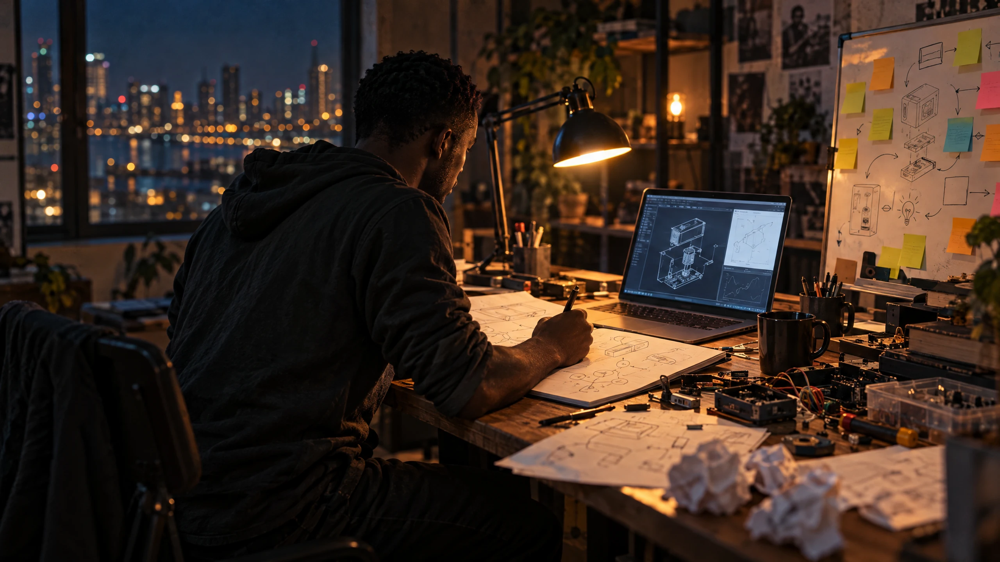

Teenagers & Young Adults
Primarily ages 15–21, ready to discover their potential, develop themselves and build their future.
INTRODUCING BUILVANTA
A global community helping young people grow, create, and contribute.
BUILVANTA is a youth development community committed to helping young people discover their potential, develop practical skills, think independently and create meaningful value. Through learning, innovation, collaboration and mentorship, we are building people who can shape their future and make a difference in the world.
BUILD YOURSELF. BUILD VALUE. BUILD OTHERS.
A generation of builders. A place for you.
CLICK HERE TO JOINYour journey to becoming a builder starts here.
WHO BELONGS HERE?
BUILVANTA is for curious minds, ambitious young people and individuals who believe there is always room to grow, create and make a difference.
Primarily ages 15–21, ready to discover their potential, develop themselves and build their future.
Anyone above 21 with a curious mind, a hunger for knowledge and a desire to keep learning and growing.
Secondary school, college and university students who want to go beyond classroom learning and develop practical knowledge, skills and confidence.
People who enjoy creating, developing ideas, solving problems, experimenting and turning possibilities into reality.
People interested in technology, artificial intelligence, innovation, digital skills and future opportunities.
People who want to lead responsibly, serve others, collaborate, inspire and make a meaningful difference in their communities and the world.
OUR COMMUNITY IN MOTION
See how curiosity, creativity and collaboration come to life at BUILVANTA.
Every great builder was once a beginner.
There was a time when the world knew nothing about them.
No applause. No recognition. No achievements to celebrate. No remarkable story to tell.
Just a young person with questions, dreams and a feeling that there had to be more to life than simply growing up, going to school, getting a job and existing.
They had potential, but potential alone was not enough.
They had dreams, but dreams without direction were only wishes. They had ideas, but ideas without action remained trapped in their imagination.
And like many others, they wondered: Where do I begin?

The beginning was not glamorous.
It started with a decision.
A decision to become intentional about their life. To stop waiting for the perfect opportunity and start making use of what was already within reach.
They began to build themselves.
They learned that discipline was more dependable than motivation. That confidence was developed, not inherited. That character mattered even when nobody was watching. They discovered that the greatest investment they could make was in the person they were becoming.
But building themselves was only the beginning.
They discovered that the mind could be their greatest tool or their greatest limitation. So they started asking better questions. They read, explored, listened, challenged assumptions and learned to think beyond what they had always known.
They became curious.
And curiosity opened doors they never knew existed.
Then came the work of building value.
They learned skills. Experimented with ideas. Made mistakes. Tried again. Discovered technology, creativity, entrepreneurship and the power of solving real problems.
Some attempts failed. Some ideas never worked. Some days brought little progress.
But they kept going.
They discovered that failure was not always a sign to stop; sometimes, it was simply an invitation to learn differently.

Along the way, they met other people.
People with different experiences, different talents, different backgrounds and different dreams. They learned to collaborate, share ideas, listen, disagree respectfully and build together.
They realised that greatness was not a competition to stand above everyone else. It was also the ability to help others rise.

And gradually, something changed.
The person who once waited for opportunities began creating them.
The person who once doubted their abilities began trusting the work they had put into developing them.
The person who once needed direction began offering direction to others.
Their voice became stronger. Their thinking became sharper. Their character became firmer. Their skills became useful. Their presence began to make a difference.
They were no longer simply dreaming about the future.
They were building it.
And one day, they stood firm.
Not because life had become easy. Not because every obstacle had disappeared. Not because they had all the answers.
They stood firm because they had developed the mind to think, the character to endure, the courage to act and the capacity to create value.
Now, they were doing exploits.
Not merely for recognition, but because their growth had become useful to the world around them. They were solving problems, creating opportunities, leading responsibly, building meaningful things and helping others discover what was possible.

And perhaps the most beautiful part of their story was this:
They had not reached the end.
They had only become the kind of person capable of building something greater.
That is the journey of a builder.
From potential to preparation. From preparation to action. From action to impact. From becoming better to making the world better.
This is why BUILVANTA exists.
Not to promise anyone overnight success. Not to manufacture an illusion of greatness.
But to create an environment where people can discover their potential, develop their minds, build practical value, grow together and become people who make a difference.
Because the world does not only need people with dreams.
It needs people who are prepared to build.
The Generation That Builds.
Build Yourself. Build Value. Build Others.